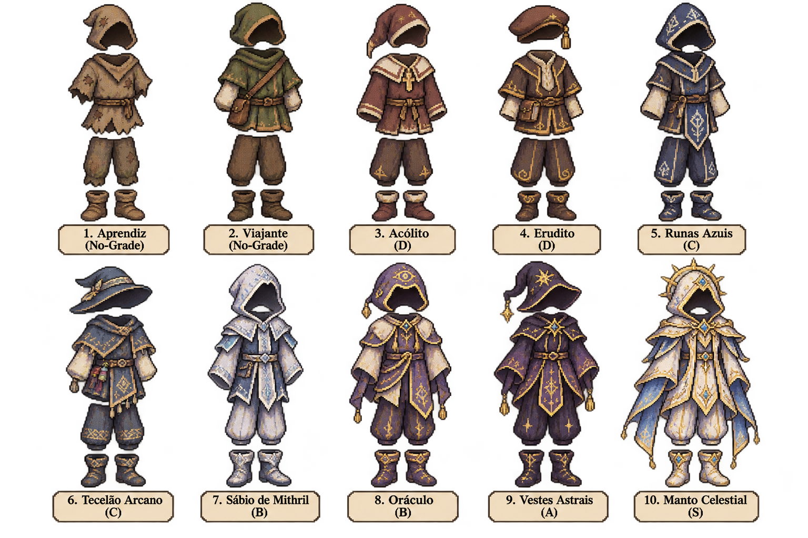
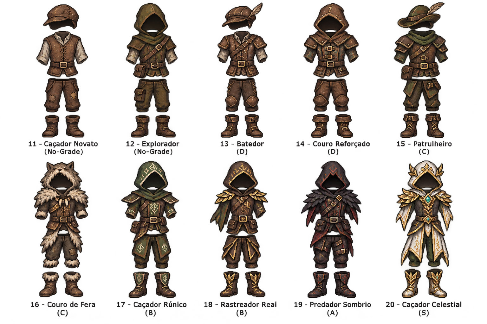
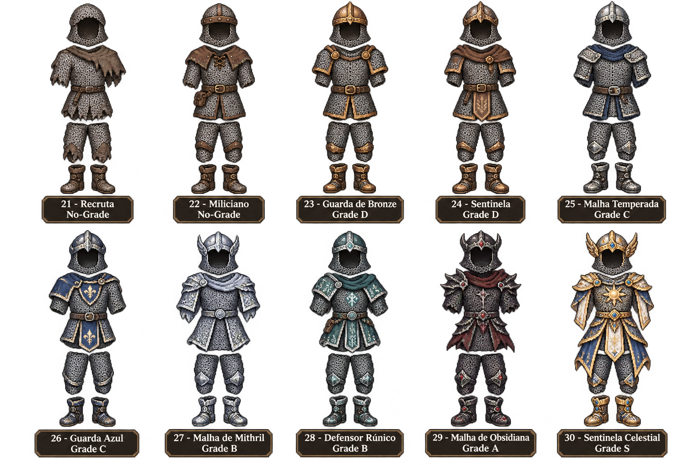
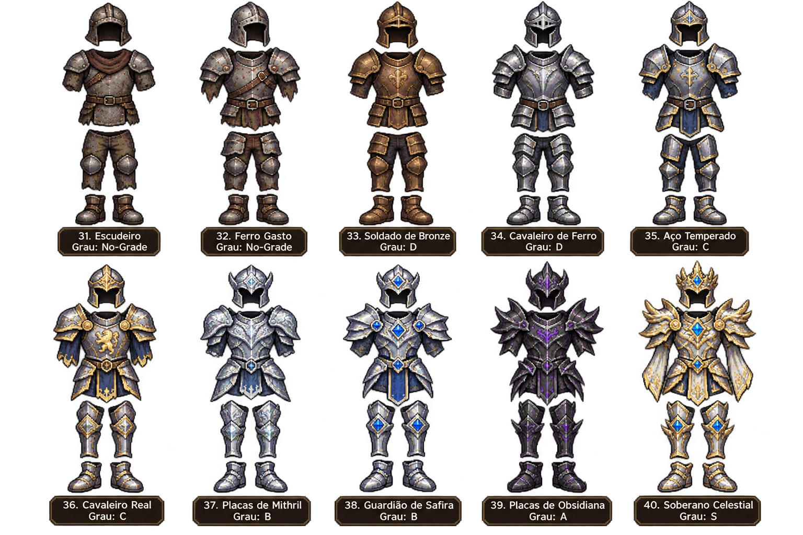
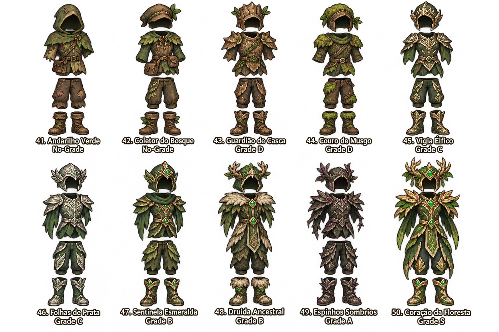
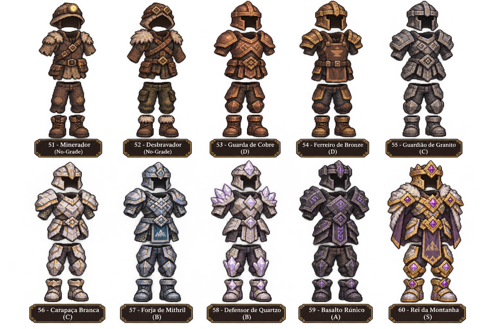
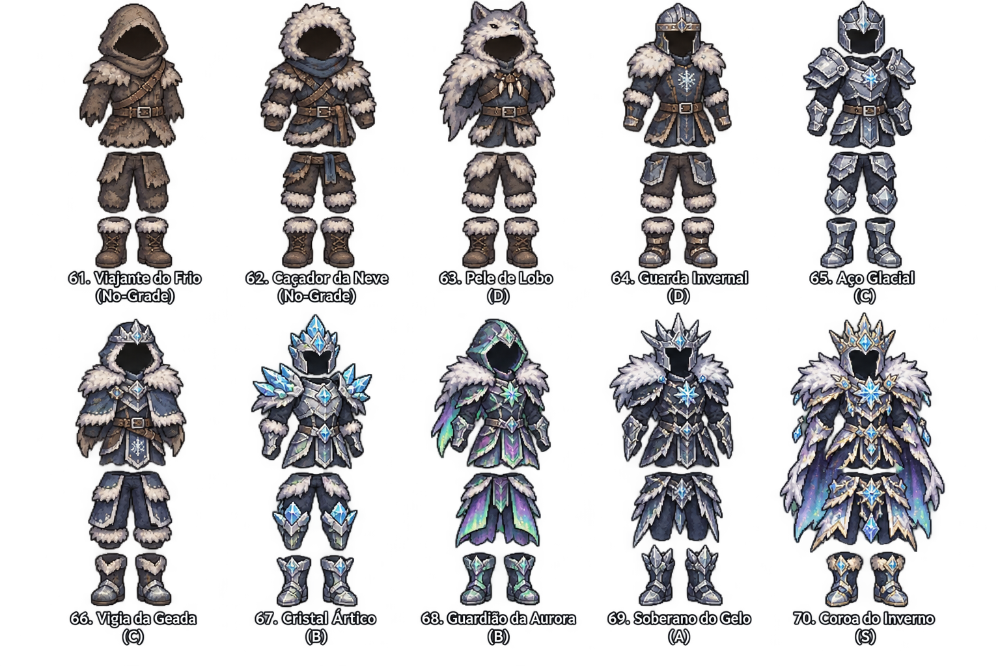
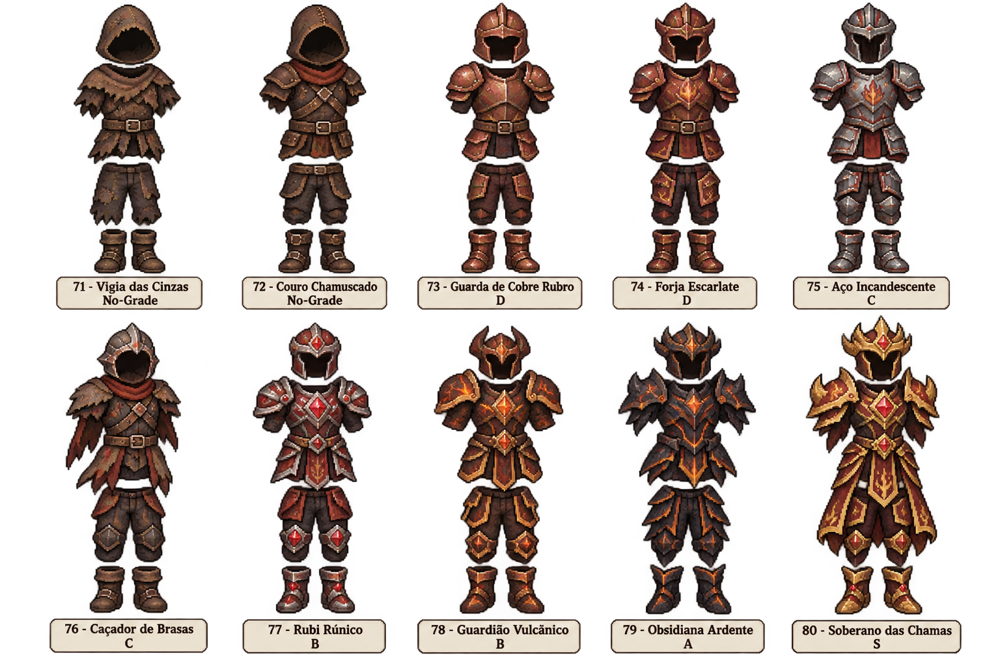
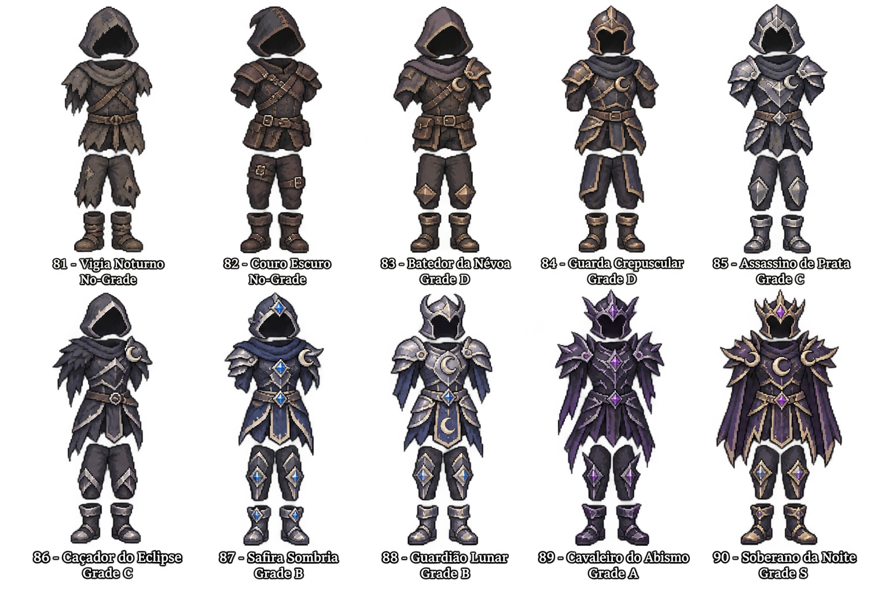
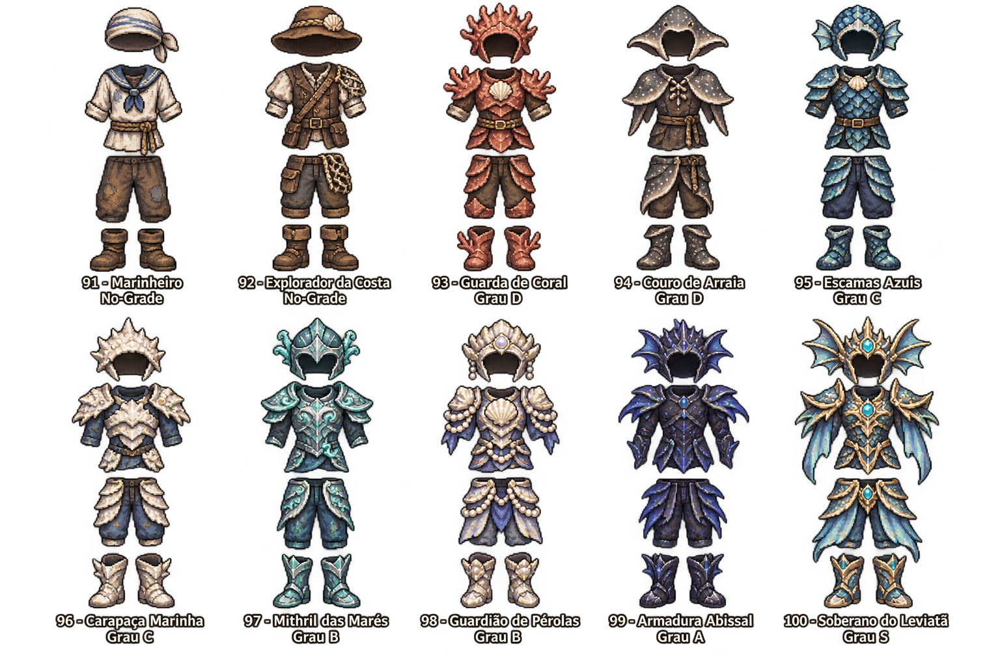

100 sets com elmo ou capuz, torso, pernas e botas. Pranchas com fundo de apresentação; não são sprites recortados nem arquivos nativos de 64×64. O catálogo padroniza nomes e grades; alguns rótulos das imagens podem conter erros de grafia.
Abra este arquivo após extrair todo o ZIP. As imagens estão na pasta pranchas.

| ID | Nome | Grade |
|---|---|---|
| 001 | Aprendiz | No-Grade |
| 002 | Viajante | No-Grade |
| 003 | Acólito | D |
| 004 | Erudito | D |
| 005 | Runas Azuis | C |
| 006 | Tecelão Arcano | C |
| 007 | Sábio de Mithril | B |
| 008 | Oráculo | B |
| 009 | Vestes Astrais | A |
| 010 | Manto Celestial | S |

| ID | Nome | Grade |
|---|---|---|
| 011 | Caçador Novato | No-Grade |
| 012 | Explorador | No-Grade |
| 013 | Batedor | D |
| 014 | Couro Reforçado | D |
| 015 | Patrulheiro | C |
| 016 | Couro de Fera | C |
| 017 | Caçador Rúnico | B |
| 018 | Rastreador Real | B |
| 019 | Predador Sombrio | A |
| 020 | Caçador Celestial | S |

| ID | Nome | Grade |
|---|---|---|
| 021 | Recruta | No-Grade |
| 022 | Miliciano | No-Grade |
| 023 | Guarda de Bronze | D |
| 024 | Sentinela | D |
| 025 | Malha Temperada | C |
| 026 | Guarda Azul | C |
| 027 | Malha de Mithril | B |
| 028 | Defensor Rúnico | B |
| 029 | Malha de Obsidiana | A |
| 030 | Sentinela Celestial | S |

| ID | Nome | Grade |
|---|---|---|
| 031 | Escudeiro | No-Grade |
| 032 | Ferro Gasto | No-Grade |
| 033 | Soldado de Bronze | D |
| 034 | Cavaleiro de Ferro | D |
| 035 | Aço Temperado | C |
| 036 | Cavaleiro Real | C |
| 037 | Placas de Mithril | B |
| 038 | Guardião de Safira | B |
| 039 | Placas de Obsidiana | A |
| 040 | Soberano Celestial | S |

| ID | Nome | Grade |
|---|---|---|
| 041 | Andarilho Verde | No-Grade |
| 042 | Coletor do Bosque | No-Grade |
| 043 | Guardião de Casca | D |
| 044 | Couro de Musgo | D |
| 045 | Vigia Élfico | C |
| 046 | Folhas de Prata | C |
| 047 | Sentinela Esmeralda | B |
| 048 | Druida Ancestral | B |
| 049 | Espinhos Sombrios | A |
| 050 | Coração da Floresta | S |

| ID | Nome | Grade |
|---|---|---|
| 051 | Minerador | No-Grade |
| 052 | Desbravador | No-Grade |
| 053 | Guarda de Cobre | D |
| 054 | Ferreiro de Bronze | D |
| 055 | Guardião de Granito | C |
| 056 | Carapaça Branca | C |
| 057 | Forja de Mithril | B |
| 058 | Defensor de Quartzo | B |
| 059 | Basalto Rúnico | A |
| 060 | Rei da Montanha | S |

| ID | Nome | Grade |
|---|---|---|
| 061 | Viajante do Frio | No-Grade |
| 062 | Caçador da Neve | No-Grade |
| 063 | Pele de Lobo | D |
| 064 | Guarda Invernal | D |
| 065 | Aço Glacial | C |
| 066 | Vigia da Geada | C |
| 067 | Cristal Ártico | B |
| 068 | Guardião da Aurora | B |
| 069 | Soberano do Gelo | A |
| 070 | Coroa do Inverno | S |

| ID | Nome | Grade |
|---|---|---|
| 071 | Vigia das Cinzas | No-Grade |
| 072 | Couro Chamuscado | No-Grade |
| 073 | Guarda de Cobre Rubro | D |
| 074 | Forja Escarlate | D |
| 075 | Aço Incandescente | C |
| 076 | Caçador de Brasas | C |
| 077 | Rubi Rúnico | B |
| 078 | Guardião Vulcânico | B |
| 079 | Obsidiana Ardente | A |
| 080 | Soberano das Chamas | S |

| ID | Nome | Grade |
|---|---|---|
| 081 | Vigia Noturno | No-Grade |
| 082 | Couro Escuro | No-Grade |
| 083 | Batedor da Névoa | D |
| 084 | Guarda Crepuscular | D |
| 085 | Assassino de Prata | C |
| 086 | Caçador do Eclipse | C |
| 087 | Safira Sombria | B |
| 088 | Guardião Lunar | B |
| 089 | Cavaleiro do Abismo | A |
| 090 | Soberano da Noite | S |

| ID | Nome | Grade |
|---|---|---|
| 091 | Marinheiro | No-Grade |
| 092 | Explorador da Costa | No-Grade |
| 093 | Guarda de Coral | D |
| 094 | Couro de Arraia | D |
| 095 | Escamas Azuis | C |
| 096 | Carapaça Marinha | C |
| 097 | Mithril das Marés | B |
| 098 | Guardião de Pérolas | B |
| 099 | Armadura Abissal | A |
| 100 | Soberano do Leviatã | S |